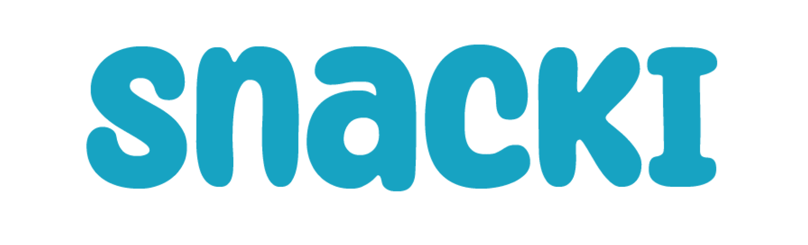

Does Snacki's design
connect with its customers?

Overview
Snacki is a Vancouver-based vending machine company offering 24/7 access to nutritious, culturally relevant Asian snacks and meals across the Greater Vancouver area.
Drawing on Japan's vending machine and convenience culture, Snacki operates machines in locations across Metro Vancouver and aims to scale by leveraging AI for a seamless grab-and-go experience. The company is supported by the SFU Charles Chang Entrepreneurship Program.
This study was conducted as part of IAT 432: Design Evaluation at Simon Fraser University. Our goal was to assess whether Snacki's current vending machine design is well-suited for the physical spaces it occupies — and to provide evidence-based recommendations grounded in real user feedback.
Participants recruited on-site at Metrotown through intercept-based interviews — aged 18 to 30+ across diverse backgrounds.
Overall inter-rater reliability score between the two evaluators — indicating strong consistency in how responses were coded.
Background
Snacki's machines occupy an interesting tension: the brand is playful and Japan-inspired, but its locations — offices, storage facilities, and private spaces — often call for a more polished, professional aesthetic.
Before conducting this study, we identified two key dimensions to evaluate: accessibility (is the machine approachable and user-friendly?) and visual appeal (does the branding attract and engage customers?). These two lenses allowed us to assess both the usability and the visual communication of Snacki's brand in the real world.
Is Snacki's current vending machine design well-suited for the physical spaces it currently occupies or plans to target — in terms of accessibility and visual appeal?
Study Location
Metropolis at Metrotown in Burnaby was chosen for its diversity of stores, broad customer demographics, and extremely high foot traffic. Metrotown SkyTrain Station was the second-busiest stop in Metro Vancouver in 2024, recording over 8.5 million boardings — making it an ideal location for participant recruitment. The study was conducted at two competitor vending machines: the YMZCPark machine near T&T Supermarket, and the Snackyo machine near the Metrotown SkyTrain entrance.
Snacki's own machines are located in lower-traffic, more isolated areas — so conducting the study at Metrotown allowed us to gather sufficient quantifiable data while observing users in a comparable commercial context.
Methodology
A field study with structured intercept interviews was chosen to capture authentic, in-context reactions to Snacki's brand — rather than decontextualized survey responses.
How We Worked
The team split into two pairs — Research Team A (Khushy Brar and Sabrina Tang) at the YMZCPark machine, and Research Team B (Irena Ong and Irina Ng) at the Snackyo machine. Each pair consisted of an interviewer and a note-taker. We positioned ourselves approximately one meter from each competitor machine and approached willing passersby for brief, structured five-minute interviews.
Covering first impression, visual branding, product transparency, cultural diversity, and desired improvements.
Responses coded into: First Impression, Visual Branding, Product Transparency, Cultural Diversity, and Opportunities.
Each category further coded as: Positive Emotional Response, Negative Emotional Response, Cultural Connection, Desire for Improvement, and Trust.
Responses were grouped using an affinity diagram before affective coding — surfacing recurring themes across all 20 participants.
Validity Considerations
Reliability was moderate — with a sample of 20 participants in consistent environmental conditions responding to standardized questions. Internal validity was also moderate: the public setting introduced confounding variables such as the Hawthorne Effect (participants may have softened negative responses under social pressure) and differing levels of familiarity with vending machine culture. External validity was relatively low, as findings are most applicable to similar mall contexts rather than broader geographic or demographic groups.
Findings
Overall, participants held a broadly neutral to positive view of Snacki's visual branding and accessibility — but a vocal minority raised concerns that reveal a real tension in the brand's identity.
First Impression
The majority of participants responded positively to their first impression, with common keywords including "cute" and "cool." The inter-rater reliability score of 0.97 indicates near-perfect consistency between evaluators. Only two negative comments were recorded — both describing the machine as looking like it was designed for children.
"Why does a vending machine look like a children's cartoon?"
— Participant 6Visual Branding
Both evaluators recorded identical positive emotional response counts for this category (inter-rater reliability: 0.86). Participants frequently described the machine as "friendly" and well-stocked with Asian snacks. Snacki's mascot was noted as feeling warm and approachable — but a subset of participants called it "childish" and "forced," suggesting the target audience was younger than themselves.
"The cartoon animals make it feel warm and approachable."
— Participant 8Product Transparency & Trust
Trust was the dominant affect code for this category. Many users felt confident about snack quality because they recognized the brands — describing the selection as reminiscent of an Asian grocery store aisle. Cleanliness of the machine also reinforced trust. The inter-rater reliability score of 0.78 was the lowest across all categories, reflecting some disagreement between evaluators on how to classify trust-adjacent comments.
"Already familiar with the Asian brands in the machine."
— Participant 16Cultural Diversity
Cultural connection was the strongest affect code in this category (inter-rater reliability: 0.92). Participants noted a wide range of Japanese and Korean snacks, and many felt a personal cultural connection to the selection. However, several participants observed that the range skewed heavily toward East Asian snacks specifically.
"The snacks are mostly within the realm of East Asian snacks."
— Participant 5Opportunities
The desire for improvement was the highest-scoring affect code in this category — and both evaluators agreed perfectly (inter-rater reliability: 1.0). Participants expressed strong interest in additional product types and technological upgrades, reflecting an engaged user base that sees clear potential in the concept.
Participant 2's suggestion — the most common technology-related improvement requested across interviews.
Participant 4's suggestion — the most frequently requested product expansion, alongside hot food options.
Age-Related Trends
A clear generational split emerged in the data. Participants aged 18–29 showed predominantly positive or neutral reactions, with virtually no negative responses (inter-rater reliability: 0.94). Participants aged 30 and above showed a noticeably higher proportion of negative comments — suggesting older users were more critical of the playful, mascot-driven aesthetic. This trend should be interpreted with caution given the smaller sample in the 30+ group, but the consistency between evaluators lends it credibility.
Recommendations
Our recommendations address the four key areas of the study — and are grounded in the specific patterns that emerged from participant responses.
Context-Adaptive Branding
The current artwork's artistic direction should be reevaluated based on placement context. While "cute" and "cool" responses were common in the mall setting, Snacki's existing machines primarily operate in private, professional environments — offices and storage facilities — where the playful mascot may read as misplaced. We recommend developing a tiered visual system: a more playful aesthetic for youth-oriented, high-traffic public spaces, and a minimal, polished design for professional or institutional placements.
Evolve the Visual Identity
Snacki's cute, friendly aesthetic makes the brand approachable — but it does not always communicate that this is a snack vending machine company aimed at a broad adult audience. The brand should update its visual identity to convey a more polished look while preserving the Japan-inspired aesthetic that gives it cultural character. This doesn't mean abandoning warmth — it means maturing it.
Improve Product Transparency
Participants who were already familiar with Asian snack brands trusted the machine immediately. For those who weren't, there was no bridge. Improving visibility through clearer product labelling, best-before dates, ingredient callouts, and brief product descriptions would extend trust to new customers who aren't already fluent in Asian snack culture — broadening Snacki's potential reach significantly.
Expand Cultural Range
The current selection resonates strongly with East Asian cultural communities — but participants expressed a desire for snacks from a broader range of Asian countries, including Southeast and South Asian offerings. We recommend conducting market research on snacks from underrepresented Asian regions and piloting location-specific curation that tailors the snack selection to the demographics of each placement area.
Reflection
This was our first experience conducting a real-world design evaluation for an actual industry partner — and it pushed us to think beyond the classroom in ways we hadn't anticipated.
Working directly with Snacki grounded the research in genuine stakes. Our findings had the potential to influence real business decisions — which made rigorous methodology feel less like an academic exercise and more like a responsibility. The experience of approaching strangers in a mall for intercept interviews was uncomfortable at first, but we quickly found that people were willing to share surprisingly candid opinions when asked sincerely.
The inter-rater reliability process was also revealing. Disagreements between evaluators — particularly on the Transparency category — showed how even structured coding systems carry interpretive room. Resolving those differences required us to articulate our reasoning clearly, which ultimately produced more defensible conclusions.
Design doesn't exist in a vacuum — it exists in a space, in a community, and in front of a person with a specific cultural frame. Snacki's challenge isn't just visual; it's about understanding which version of itself to show in which room.
Context changes everything. The same design reads as charming in a mall and childish in an office. Snacki needs a design system, not just a design.
Familiarity builds trust faster than any label can. Users who recognized the brands trusted the machine instantly. Legibility of product origins is a shortcut to credibility.
Field research is humbling. Real participants don't behave like hypothetical users. Going into the field — clipboard in hand — gave us feedback no survey platform could have surfaced.